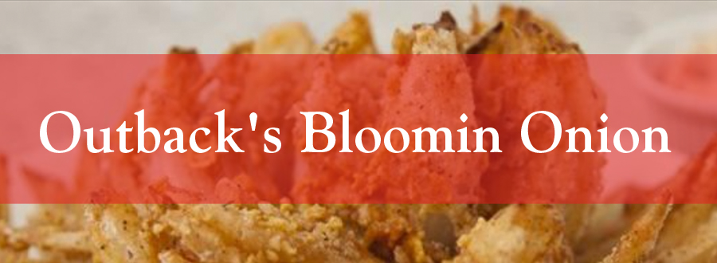

BLOOMING ONION INGREDIENTS
1 large onion
1 1/2 cups Gold Medal™ all-purpose flour
2 teaspoons paprika
1/2 teaspoon cumin
1/2 dried/ground teaspoon thymev
1/2 teaspoon black pepper
2 eggs
1 cup milk
DIRECTIONS
Mix all dry ingredients together in one bowl, and wet ingredients together in another.
Peel the onion, keeping the hairy root intact. Cut about 1 inch off the other side.
Place the onion on a chopping board, hairy side facing up. Make your first cut about an inch from the top of the root, and slice downward all the way to the bottom, without cutting all the way through. Rotate the onion 90° and repeat. Keep going until you have 4 evenly spaced cuts.
Now make equally spaced cuts in between these 4 cuts. You are probably looking at making at least 2 more cuts per quarter, meaning 12 sections to your onion by the time you are finished. The professional ones have more like 24+ sections, but don't feel pressured! If you can fit in more than 12 sections, then obviously the finished results will be all the more striking, but this depends on the size of the onion, the sharpness of your knife, and your steady hand.
Turn the onion on its hairy back, and begin to peel open the sections—unfurling from the outside, and working toward the center. It can get tricky toward the middle, so stop when you've done as much as you can. If a section breaks off, don't worry – no one will ever notice.
Put the blooming onion onto a plate and sprinkle over your dry ingredients, making sure all the layers are covered. Turn it upside down and snip off any excess root hair (grooming is necessary, even for an onion), and shake to get rid of any excess mix. There will still be plenty of dry mix left.
Submerge the onion into your bowl of wet ingredients, and turn it over to make sure every part of the onion is covered. Take it out, and coat with your dry mix again, this time just shaking it over to cover all areas.
Place the onion, flower side up, into a deep fryer or deep pan, making sure the veggie oil is around 350°F (175°C). 7-10 minutes will make sure you are left with a crispy, golden beauty, but keep your eye on it. When you retrieve the onion, the petals will have unfurled even more, so that you have a truly blooming onion. Give it a shake, then put it on some paper towels to drain off the excess oil.